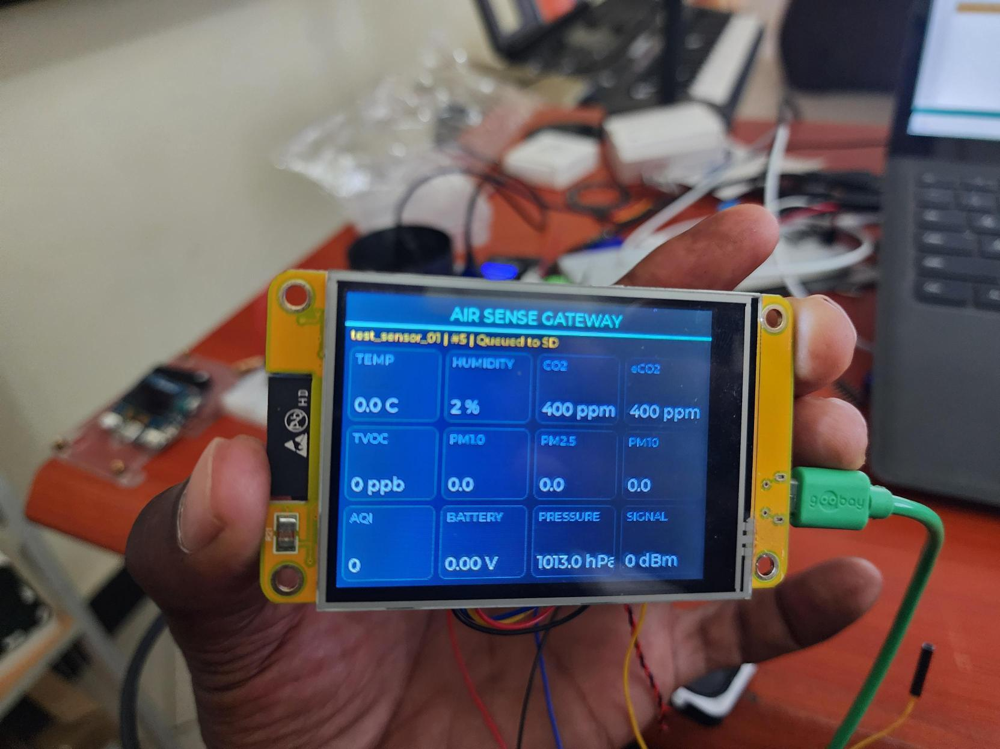
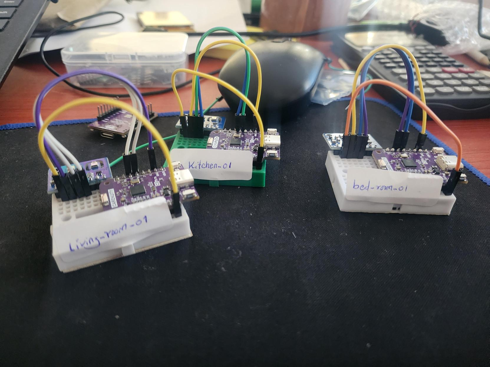

Flash an Air Sense Gateway or Sensor Node directly from this page over USB — the same firmware running in every deployed facility, no toolchain required for install or replacement in the field.
Works in Chrome, Edge, or Opera on desktop — powered by the Web Serial API, which Firefox, Safari, and mobile browsers don't support yet.
How it works
No PlatformIO, no Arduino IDE, no drivers beyond what your browser already has.
Connect the Gateway (CYD) or Sensor Node (ESP32-C3) and click its Install button below.
Choose the device's serial port when Chrome prompts you, then let it flash — a couple of minutes.
Gateways set up over a WiFi captive portal; Sensor Nodes pair automatically over ESP-NOW, no typing required. See Provisioning reference.
Live on the hardware
Every Gateway drives a live LVGL dashboard on its screen — one page per connected
Sensor Node, tap anywhere to advance, auto-labelled with delivery status
(Forwarded to the backend, or Queued to SD during a WiFi outage).
This strip loops real units running this exact firmware.


Hardware · Hub
The always-on hub for one facility zone: listens for every Sensor Node over ESP-NOW, forwards readings to the backend over WiFi, and backlogs to a MicroSD card when the network is down.
Dual-mode ESP32 firmware: ESP-NOW receiver for up to 4 Sensor Nodes plus a WiFi uplink to the Air Sense backend, with a live LVGL dashboard and MicroSD offline backlog built in. Two display builds — pick whichever matches your screen.
| Board | CYD (ESP32-2432S028R) — 2.8" ILI9341; headless plain ESP32 + SD also supported |
|---|---|
| Radios | ESP-NOW (room nodes) + WiFi (backend uplink) |
| Touch build | Full touch HMI as of v2.0.0 — Home, per-node pages (Overview/Air Quality/Environment/Alerts/Node Info), live Alerts, and on-device Settings (theme, brightness, thresholds, pairing, factory reset) |
| No-Touch build | Same dashboard, auto-advances to the next node's page every 5s — for a CYD clone/plain ILI9341 with no XPT2046 touch chip |
| Offline resilience | MicroSD backlog, auto-replay once WiFi returns — zero data loss |
| Provisioning | WiFi captive portal on first boot; hold BOOT 3s to reprovision |
Hardware · Room node
Always-on room monitor: samples temperature, humidity, eCO₂, and TVOC every few seconds and broadcasts a lightly-averaged reading to the Gateway over ESP-NOW. Mains/USB powered — no sleep, so the gas sensor stays warmed up.
One binary flashes to every Sensor Node — it pairs with a Gateway automatically over ESP-NOW after flashing, no device ID, Gateway address, or channel to type in.
| Board | ESP32-C3 (this build's wired unit: SDA → GPIO8, SCL → GPIO10) |
|---|---|
| Sensors | ENS160 (eCO₂ + TVOC) + AHT21 (temp/humidity) combo, I2C |
| Radio | ESP-NOW only — no WiFi connection made on this device |
| Power | Mains/USB, always-on (ENS160 needs continuous warm-up) |
| Send cadence | Averaged reading every 5s; RAM retry buffer if the Gateway is briefly unreachable |
| Provisioning | Automatic over ESP-NOW during the Gateway's pairing window; optional serial console at 115200 baud for advanced use |
After flashing
On first boot (or after a BOOT-hold reset), the Gateway opens a WiFi access point:
AirSense-Setup-XXXXXXHold the BOOT button for 3s at power-up to reopen the portal and reconfigure a unit already in service.
No WiFi radio — pairs with the Gateway automatically over ESP-NOW, nothing to type in:
node-A1B2C3) — no manual Gateway address or channel entryOptional: a USB serial console at 115200 baud offers help, show (current pairing status), set deviceid <value> (rename without re-pairing), and pair (force a fresh pairing search — same effect as holding BOOT for 3s at power-up).